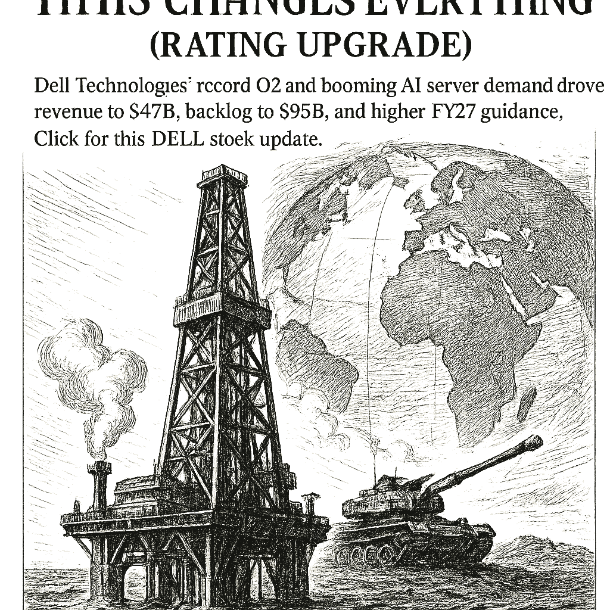

SPY
Current: $722.46Change: +6.59 (+0.92%)
Updated:
Source: yahoo_chartFreshness: fresh

BofA cuts its DELL price target despite a record $54.9 billion quarter, questioning AI growth sustainability.

Today's Headline: BofA resets Dell stock price target by $100 after record earnings
Setup: BofA cuts its DELL price target despite a record $54.9 billion quarter, questioning AI growth sustainability.
Primary Topic: Market Rebound
Specific Development: Oil prices have surged following reports of supply concerns due to geopolitical tensions, particularly involving Iran and NATO.
Why Today Is Different: The market is responding positively to rising oil prices, contrasting with previous declines, indicating a shift in investor sentiment.
Secondary Topics: Geopolitical tensions; Oil prices; Market sentiment
Tone: cautious optimism
Sectors: Energy; Materials; Utilities
Commodities: Oil
Countries Or Regions: Iran; NATO countries
Macro Themes: Geopolitical risks; Commodity price fluctuations
Why This Story: The interplay between rising oil prices and geopolitical tensions is crucial for market dynamics and investor strategies.
Why This Matters: BofA resets Dell stock price target by $100 after record earnings is the clearest current evidence-led frame for Joshua's observation-only review; missing facts remain explicit intelligence gaps.

Summary: Global markets are reacting to rising oil prices and geopolitical tensions, with notable movements in energy and commodity sectors.
What Happened Overnight: Oil prices surged due to supply concerns linked to geopolitical tensions, particularly involving Iran.
What Changed Materially: Increased oil prices have shifted market sentiment positively, contrasting with previous declines.
Which Assets Sectors Are Affected: Energy; Materials; Utilities
Does It Look Like Noise Or A Real Regime Input: This appears to be a significant regime input rather than noise.
Why This Matters: Joshua can use verified cross-asset moves and deterministic risk context while keeping causation explicitly unresolved.

DELL Earnings Expectations — 2026-11-24, After Close
Consensus EPS: $6.75
Year-ago EPS: unavailable
Expected EPS growth: unavailable
Consensus revenue: $50.3B
Year-ago revenue: unavailable
Expected revenue growth: unavailable
Source: finnhub_earnings_calendar · As of: 2026-11-27T15:15:23.703042+00:00 · Freshness: current

- WOPR learning pipeline: Collecting samples
- Candidates evaluated 24h: 0
- Current gate: Evidence
- Notification ledger events in 24h: 13
- Pending orders created/canceled/filled/expired: 2/0/1/0
- Pending lifecycle interpretation: Pending-order cancellations have trackable reasons and no obvious rapid churn pattern.
- Portfolio risk: Label: High / Score: 92.4
- Latest intelligence gap report: intelligence_gap_report_2026-11-22.pdf
Why This Matters: The active gate is Evidence, so the key question is why candidates are stopping before approval, not how to force trades.

- Sentinel role: infrastructure and operational status only.
- State: ONLINE
- Last successful validation: 2026-11-27T15:18:26.363611+00:00
- Payloads accepted/rejected: 37865/508
- Node health score: 100
Why This Matters: Sentinel is ONLINE, so Joshua should use its context only to the extent the latest accepted pulse is fresh and authenticated.
CANDIDATES MOVING THROUGH JOSHUA'S INVESTMENT-REVIEW WORKFLOW
FROZEN DAILY BRIEF SNAPSHOT | 2026-11-27T15:14:04.601539+00:00
QUEUE SUMMARY | Investment Ready: 0 | Waiting for Price: 0 | Waiting for Evidence: 1 | Research Underway: 2 | Governance Hold: 6 | Monitor Only: 0
Investment-ready status: No candidates are currently Investment Ready.
#4 AVGO - Governance Hold [Moved Up 5->4]
Joshua's Thesis: Positive thesis not yet established.
Why Waiting: Governance gate has not cleared.
Price: 300.86 now; 338.44 preferred entry
What Unlocks It: Governance gate clears; Clear valuation support; Evidence that the business quality matches the risk being taken
Portfolio Fit: 35.7/100 — LOW ↓
Portfolio Fit Drivers: projected Technology exposure 50.2%; projected AI infrastructure exposure 50.2%; candidate amount $100 vs $99 currently allocated
Candidate Risk: 56.3/100 — FAIR ↑
Risk Drivers: projected Technology exposure 50.2%; projected AI infrastructure exposure 50.2%; candidate amount $100 vs $99 currently allocated
Next: Re-evaluate after the recorded gate clears. Owner: Columbo.
#6 NVDA - Waiting for Evidence [Moved Up 7->6]
Joshua's Thesis: Positive thesis not yet established.
Why Waiting: Positioning gate failed.
Price: 149.30 now; 213.27 preferred entry
What Unlocks It: Clear valuation support; Evidence that the business quality matches the risk being taken; Independent evidence streams pointing the same way
Portfolio Fit: 35.7/100 — LOW ↓
Portfolio Fit Drivers: projected Technology exposure 50.2%; projected AI infrastructure exposure 50.2%; candidate amount $100 vs $99 currently allocated
Candidate Risk: 56.3/100 — FAIR ↑
Risk Drivers: projected Technology exposure 50.2%; projected AI infrastructure exposure 50.2%; candidate amount $100 vs $99 currently allocated
Next: Positioning status must no longer be warning. Owner: Joshua.
#12 QBTS - Governance Hold
Joshua's Thesis: Positive thesis not yet established.
Why Waiting: Governance gate has not cleared.
Price: 7.00 now; 17.52 preferred entry
What Unlocks It: Governance gate clears; Clear valuation support; Evidence that the business quality matches the risk being taken
Portfolio Fit: 0.0/100 — VERY LOW
Portfolio Fit Drivers: projected Unclassified exposure 62.5%; projected Unclassified exposure 62.5%; candidate amount $100 vs $99 currently allocated
Candidate Risk: 86.9/100 — VERY HIGH ↓
Risk Drivers: projected Unclassified exposure 62.5%; projected Unclassified exposure 62.5%; candidate amount $100 vs $99 currently allocated
Next: Re-evaluate after the recorded gate clears. Owner: Joshua.
#13 PLTR - Governance Hold [Moved Up 14->13]
Joshua's Thesis: Positive thesis not yet established.
Why Waiting: Governance gate has not cleared.
Price: 163.59 now; 196.14 preferred entry
What Unlocks It: Governance gate clears; Clear valuation support; Evidence that the business quality matches the risk being taken
Portfolio Fit: 35.7/100 — LOW ↓
Portfolio Fit Drivers: projected Technology exposure 50.2%; projected AI software exposure 50.2%; candidate amount $100 vs $99 currently allocated
Candidate Risk: 56.3/100 — FAIR ↑
Risk Drivers: projected Technology exposure 50.2%; projected AI software exposure 50.2%; candidate amount $100 vs $99 currently allocated
Next: Re-evaluate after the recorded gate clears. Owner: Columbo.
#15 DIA - Research Underway [Moved Up 16->15]
Joshua's Thesis: Positive thesis not yet established.
Why Waiting: Research evidence is still being gathered.
Price: Current price unavailable.; Preferred entry not established.
What Unlocks It: Clear valuation support; Evidence that the business quality matches the risk being taken; Independent evidence streams pointing the same way
Portfolio Fit: 35.7/100 — LOW ↓
Portfolio Fit Drivers: projected ETF exposure 50.2%; projected Broad market exposure 50.2%; candidate amount $100 vs $99 currently allocated
Candidate Risk: 56.3/100 — FAIR ↑
Risk Drivers: projected ETF exposure 50.2%; projected Broad market exposure 50.2%; candidate amount $100 vs $99 currently allocated
Next: Clear valuation support; Evidence that the business quality matches the risk being taken; Independent evidence streams pointing the same way. Owner: Columbo.
#20 XRAY - Research Underway [NEW]
Joshua's Thesis: Positive thesis not yet established.
Why Waiting: Research evidence is still being gathered.
Price: 9.77 now; Preferred entry not established.
What Unlocks It: Clear valuation support; Evidence that the business quality matches the risk being taken; Independent evidence streams pointing the same way
Portfolio Fit: 0.0/100 — VERY LOW
Portfolio Fit Drivers: projected Unclassified exposure 62.5%; projected Unclassified exposure 62.5%; candidate amount $100 vs $99 currently allocated
Candidate Risk: 86.9/100 — VERY HIGH
Risk Drivers: projected Unclassified exposure 62.5%; projected Unclassified exposure 62.5%; candidate amount $100 vs $99 currently allocated
Next: Clear valuation support; Evidence that the business quality matches the risk being taken; Independent evidence streams pointing the same way. Owner: Columbo.
#21 ANGX - Governance Hold [Moved Down 20->21]
Joshua's Thesis: Positive thesis not yet established.
Why Waiting: Governance gate has not cleared.
Price: 4.11 now; 4.13 preferred entry
What Unlocks It: Governance gate clears; Clear valuation support; Evidence that the business quality matches the risk being taken
Portfolio Fit: 0.0/100 — VERY LOW
Portfolio Fit Drivers: projected Unclassified exposure 62.5%; projected Unclassified exposure 62.5%; candidate amount $100 vs $99 currently allocated
Candidate Risk: 86.9/100 — VERY HIGH ↓
Risk Drivers: projected Unclassified exposure 62.5%; projected Unclassified exposure 62.5%; candidate amount $100 vs $99 currently allocated
Next: Re-evaluate after the recorded gate clears. Owner: Advisory Committee.
#22 RCL - Governance Hold [Moved Down 21->22]
Joshua's Thesis: Positive thesis not yet established.
Why Waiting: Governance gate has not cleared.
Price: 314.11 now; 310.23 preferred entry
What Unlocks It: Governance gate clears; Clear valuation support; Evidence that the business quality matches the risk being taken
Portfolio Fit: 0.0/100 — VERY LOW
Portfolio Fit Drivers: projected Unclassified exposure 62.5%; projected Unclassified exposure 62.5%; candidate amount $100 vs $99 currently allocated
Candidate Risk: 86.9/100 — VERY HIGH ↓
Risk Drivers: projected Unclassified exposure 62.5%; projected Unclassified exposure 62.5%; candidate amount $100 vs $99 currently allocated
Next: Re-evaluate after the recorded gate clears. Owner: Columbo.
#25 SPCX - Governance Hold
Joshua's Thesis: Positive thesis not yet established.
Why Waiting: Governance gate has not cleared.
Price: 127.44 now; 148.62 preferred entry
What Unlocks It: Governance gate clears; Clear valuation support; Evidence that the business quality matches the risk being taken
Portfolio Fit: 0.0/100 — VERY LOW
Portfolio Fit Drivers: projected Unclassified exposure 62.5%; projected Unclassified exposure 62.5%; candidate amount $100 vs $99 currently allocated
Candidate Risk: 86.9/100 — VERY HIGH ↓
Risk Drivers: projected Unclassified exposure 62.5%; projected Unclassified exposure 62.5%; candidate amount $100 vs $99 currently allocated
Next: Re-evaluate after the recorded gate clears. Owner: Advisory Committee.
Observation only. This section creates no recommendation, order, authority, or execution instruction.
- Which recorded governance requirement must clear before AVGO can advance?
- If NVDA reaches the recorded price condition <= 213.27, which recorded evidence and governance requirements would still remain?
- Which recorded governance requirement must clear before QBTS can advance?
- Which recorded governance requirement must clear before PLTR can advance?
- What DELL EPS or revenue result would materially change the current recorded thesis?

The market's positive response to rising oil prices amid geopolitical tensions indicates a shift in sentiment. Investors are likely reassessing risk and opportunity in energy and related sectors. Monitoring these developments will be crucial for understanding future market movements.

Compared to: 2026-11-25
- Market weather: Elevated -> Balanced
- Top opportunity: Still DELL
- Joshua gate: Learning trust -> Evidence
- 2Y Treasury.last_price: 4.63 -> 4.61 (down); 2Y Treasury.last_price changed 0.43% versus the prior frozen Chronicle snapshot.
- 2Y Treasury.percent_change: 0.0 -> -0.43196544276456966 (down); Baseline was zero; percentage significance is unavailable.
- 10Y Treasury.last_price: 4.91 -> 4.85 (down); 10Y Treasury.last_price changed 1.22% versus the prior frozen Chronicle snapshot.
- 10Y Treasury.percent_change: -0.2032520325203209 -> -1.2219959266802545 (down); 10Y Treasury.percent_change changed 501.22% versus the prior frozen Chronicle snapshot.
- 30Y Treasury.last_price: 5.3 -> 5.24 (down); 30Y Treasury.last_price changed 1.13% versus the prior frozen Chronicle snapshot.
- 30Y Treasury.percent_change: 0.18903591682419257 -> -1.1320754716981059 (down); 30Y Treasury.percent_change changed 698.87% versus the prior frozen Chronicle snapshot.
- SPY.last_price: 702.03 -> 722.46 (up); SPY.last_price changed 2.91% versus the prior frozen Chronicle snapshot.
- SPY.percent_change: -3.85784716516024 -> 0.9205582019081721 (up); SPY.percent_change changed 123.86% versus the prior frozen Chronicle snapshot.
- QQQ.last_price: 614.77 -> 640.955 (up); QQQ.last_price changed 4.26% versus the prior frozen Chronicle snapshot.
- QQQ.percent_change: -6.783824354444969 -> -0.6332940592831333 (up); QQQ.percent_change changed 90.66% versus the prior frozen Chronicle snapshot.
- IWM.last_price: 262.39 -> 271.46 (up); IWM.last_price changed 3.46% versus the prior frozen Chronicle snapshot.
- IWM.percent_change: -2.861691100251747 -> 2.7401407917644205 (up); IWM.percent_change changed 195.75% versus the prior frozen Chronicle snapshot.

Joshua did not materially change its top opportunity: DELL remains first. The useful question is whether confidence improved, deteriorated, or merely stayed unproven.
- Unknown: Dell Technologies Earnings; why it matters: Dell's performance could signal broader trends in the tech sector amid rising AI demand. - Current observations are not sufficient to confirm or retire this warning.
- Still watching: Nvidia's Stock Performance; why it matters: Nvidia's leadership changes could impact investor confidence and stock valuation. - Current gate is Evidence.
- Unknown: Market Volatility Indicators; why it matters: Understanding volatility can help gauge market sentiment and potential risks. - Current observations are not sufficient to confirm or retire this warning.
Portfolio Construction Review
Current allocation: 99.16 allocated.
Largest sector: Industrials at 50.3%.
Largest theme: Economic cycle at 50.3%.
Diversification: Mixed (49.7).
Cash allocation: 90.1% unallocated.
Recommended exposure: DELL at portfolio-fit score 35.7.
Portfolio fit: DELL has strong standalone evidence, but it increases portfolio concentration.
Why This Matters: Portfolio Manager evaluates whether an opportunity improves this portfolio; it does not select the investment, vote, or authorize execution.

Focus on the implications of rising oil prices and geopolitical tensions for market dynamics today.

| Can trigger trade | no |
| Can modify trade rules | no |
| Can add watch items | yes |
| Can add review questions | yes |
| Can adjust confidence notes | yes |
| Input policy | external_intelligence_plus_sanitized_internal_observations |
| External policy | The Editor-in-Chief synthesizes current world/market context where available and labels unknowns; provider/model provenance remains separate. |
| Internal policy | Joshua/WOPR/Sentinel facts are supplied as sanitized observation-only summaries. |
| Editorial model | gpt-4o-mini |
- Selected by a deterministic daily rotation through symbols already present in the persisted Chronicle snapshot.
- Related event on the canonical wire: Why Is Royal Caribbean (RCL) Up 5.3% Since Last Earnings Report?
- Buyer beware? Nvidia's volatile swings expose risks of single-stock ETFs
- Desk: company; source: CNBC; linked symbols: NVDA.
- Published: 11/26/26 04:00 MST.
- High-impact watch: GDP by County and Personal Income by County, 2025 - 12/2/26 06:30 MST.
- Affected assets: US equities, Treasuries, USD; source: bea_release_schedule.
- DELL earnings: November 24, 2026, after close.
- AVGO earnings: December 9, 2026, after close.
- Materials: 4.88% session performance; source: persisted sector ledger.
- Communication Services: 4.09% session performance; source: persisted sector ledger.
- Health Care: 3.34% session performance; source: persisted sector ledger.
- ETHUSD: -2.81% recorded move; price: 1660.8.
- Session: 24h; catalyst status: no_verified_catalyst; source: yahoo_chart.
- Oil Price Movements; why it matters: Rising oil prices can significantly impact inflation and market sentiment.
- State: healthy; score: 66.00/100; advance/decline ratio: 3.41.
- Above 50-day average: 61.30%; sample: 119; provider: sentinel_sampled_breadth.
- Decision outcomes evaluated: 16; currently untestable: 0.
- Warning review: still watching 1, unknown 2; confidence calibration: insufficient_sample.
- Current macro regime: broad_risk_on; change probability: unavailable.
- Risk dashboard: neutral (54/100); breadth: healthy; sentiment: cautious.
- Scenario board only - a current-state observation, not a forecast or execution instruction.
- Founded Bridgewater Associates and popularized systematic macro analysis, risk parity, and explicit decision principles.
- Published quotation: "He who lives by the crystal ball will eat shattered glass."
- Published framework: Translate economic cause-and-effect relationships into explicit rules, diversify across independent return drivers, balance rather than merely add risk, and stress-test decisions against different environments.
- Committee lens: Dalio asks Joshua to model the system, diversify evidence and exposures, and test a proposal across inflation, growth, liquidity, and policy regimes.
- Public philosophy profile only; no participation, endorsement, or current recommendation is implied.
- Which recorded governance requirement must clear before QBTS can advance?
- Define evidence that would confirm or retire each unresolved warning before the next review window.
- Which recorded governance requirement must clear before AVGO can advance?
- If NVDA reaches the recorded price condition <= 213.27, which recorded evidence and governance requirements would still remain?
- Which recorded governance requirement must clear before QBTS can advance?
- Which recorded governance requirement must clear before PLTR can advance?
- Proposed review: Geopolitical Developments; why it matters: Escalating tensions could lead to increased volatility in markets.
- Proposed review: Treasury Yield Trends; why it matters: Changes in Treasury yields can influence equity valuations and investor behavior.
- Canonical instruments reviewed: 24; delayed 6, fresh 18.
- Leading sources: yahoo_chart (21), treasury_official_yield_curve (3).
- Snapshot recorded: 11/27/26 08:15 MST.
BofA resets Dell stock price target by $100 after record earnings
Storm meter: Elevated
#4 AVGO - Governance Hold [Moved Up 5->4]
Observation mode: observation_only
Watch: Oil Price Movements; why it matters: Rising oil prices can significantly impact inflation and market sentiment.
Question: Which recorded governance requirement must clear before AVGO can advance?